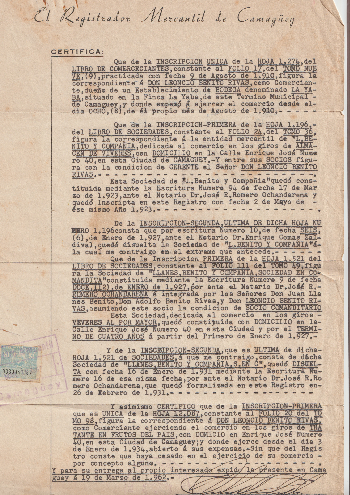
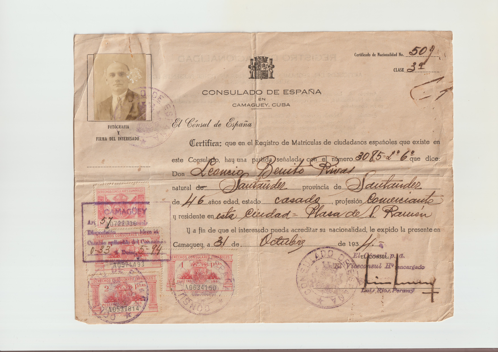
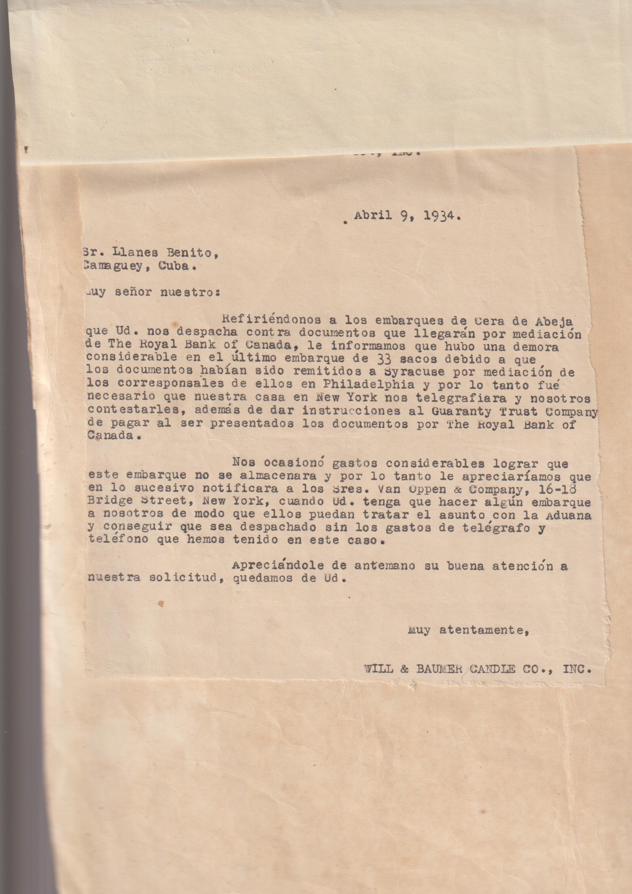
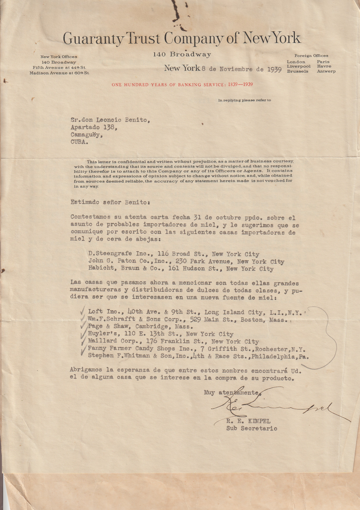
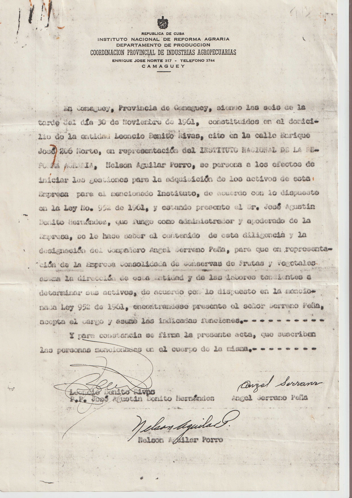
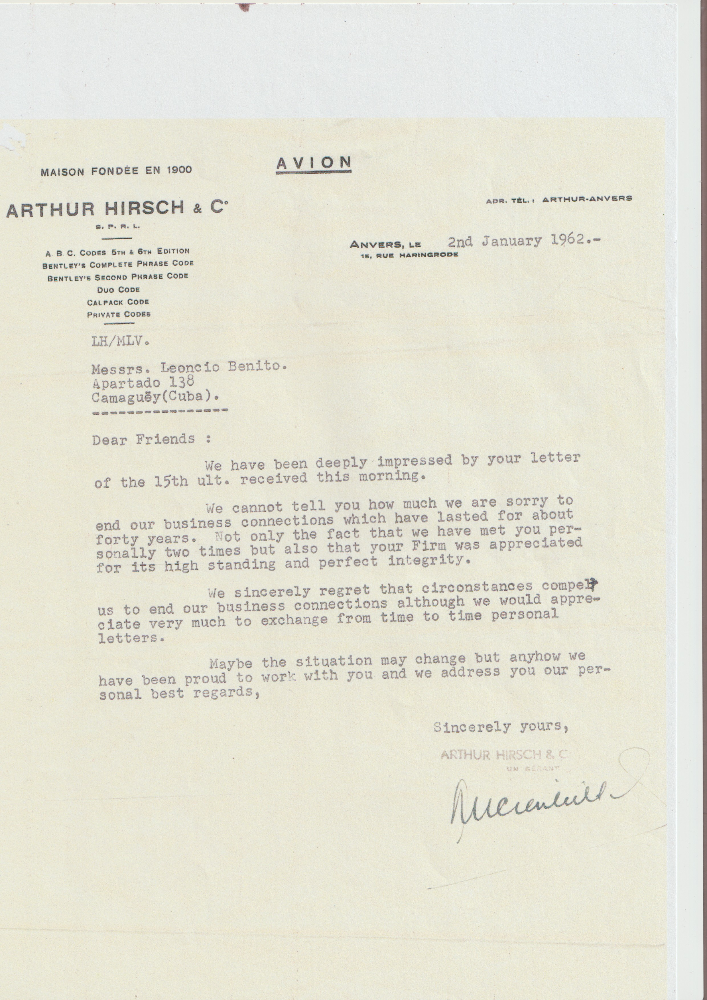
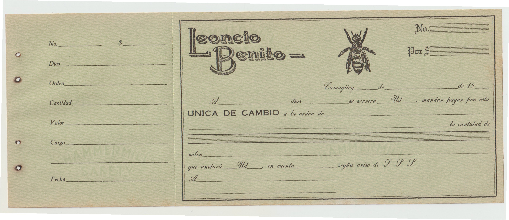
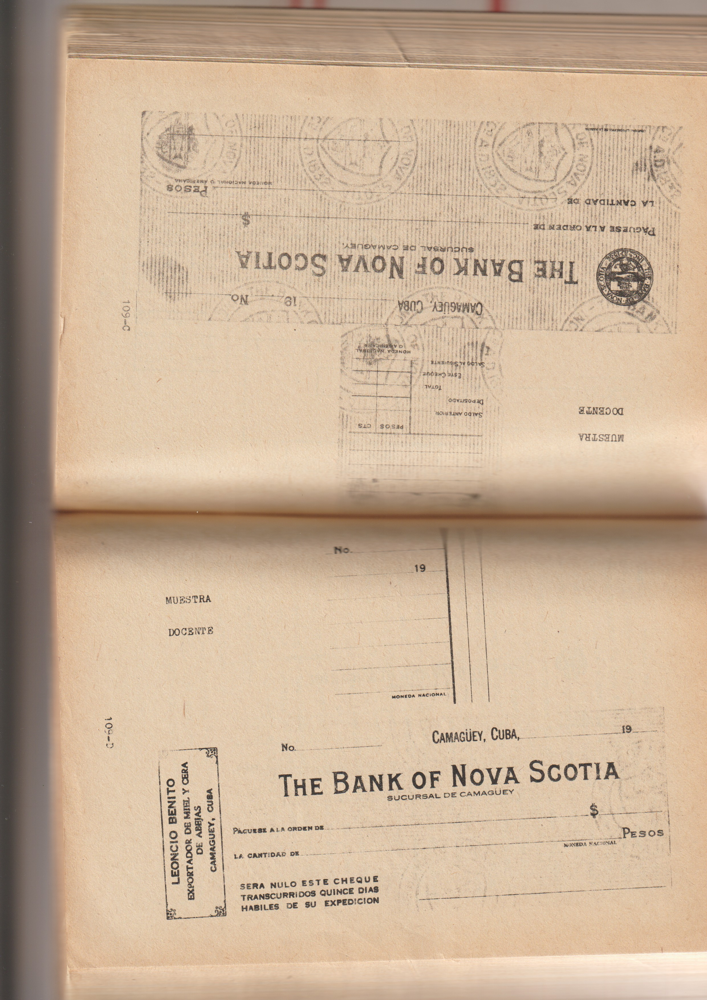

Registro Mercantil · 1962
Los antecedentes comerciales
La certificación recoge inscripciones desde 1910, incluida la bodega La Yaba y la sociedad Llanes Benito y Compañía.
Ver escaneo completoArchivo documental · Camagüey
Ocho piezas conservadas en el fondo familiar permiten seguir la actividad comercial de la firma y el contexto de Leoncio Benito Rivas.
Fuentes originales
Abre cada escaneo completo para consultar el documento y sus reversos cuando los haya.

Registro Mercantil · 1962
La certificación recoge inscripciones desde 1910, incluida la bodega La Yaba y la sociedad Llanes Benito y Compañía.
Ver escaneo completo
Consulado de España · 1933
Un certificado consular identifica a Leoncio Benito Rivas como comerciante residente en Camagüey.
Ver escaneo completo
Nueva York · 1934
Will & Baumer Candle Co. escribió sobre el despacho de un embarque de 33 sacos de cera de abeja.
Ver escaneo completo
Nueva York · 1939
Guaranty Trust Company propuso a Leoncio Benito posibles importadores de miel y cera en Estados Unidos.
Ver escaneo completo
Camagüey · 1961
El documento del INRA trata la adquisición de activos de una empresa de conservas. Se conserva junto a las demás piezas del archivo.
Ver escaneo completo
Amberes · 1962
Arthur Hirsch & C° recordó una relación comercial de unos cuarenta años con la firma.
Ver escaneo completo
Camagüey · Sin fecha visible
El formulario conserva la marca, la abeja y los campos impresos de la firma comercial.
Ver escaneo completo
Camagüey · Sin fecha visible
Muestras de The Bank of Nova Scotia y The Royal Bank of Canada muestran la actividad bancaria vinculada al archivo.
Ver escaneo completo